Площадки для поиска работы
Где искать работу
Общее
Telegram
Собрал для вас папку в телеграме с 15+ каналами для поиска вакансий. Можно писать напрямую HR-ам, выкладывать там своё резюме
Open-source AI job search: сканирует job-порталы, оценивает вакансии по шкале A–F, адаптирует CV под отклик и ведёт трекинг заявок. Работает локально в AI coding CLI (Claude Code, Gemini, Codex, OpenCode…). Помогает автоматически рассылать резюме на ВУ с помощью агента.
СНГ
Основная площадка для поиска работы в Санкт-Петербурге и Москве, также есть другие города, но меньше вакансий. Конверсия не очень большая, работает только если разослать несколько сотен откликов, лучше — более 1000
Конверсия не очень большая, но может повезти, и ваше резюме попадёт в глаза HR-у
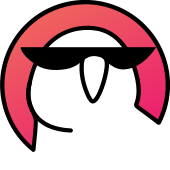
Крупное IT-сообщество, на котором можно найти хорошие ML-вакансии. Довольно часто выкладывают новые вакансии по РФ и СНГ. Можно брать контакты HR-ов и писать им в тг
Немаленький агрегатор IT-вакансий, но всё-таки не очень много вакансий именно по ML. Тем не менее, тоже хороший вариант — там можно разместить своё резюме, и рекрутеры будут сами приходить
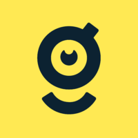
Много вакансий: как ML, так и другие разделы. Почему-то очень много предложений от Яндекса, Сбера и прочих бигтехов, однако всё равно можно найти хорошие предложения. Как правило, ищут не джунов, а более опытных специалистов от Middle+ и выше
Много разных IT-вакансий, но ML-ных не так много. Есть тг-канал
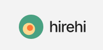
Вакансий не очень много, но может промелькнуть что-нибудь интересное
Сообщество с прикольным тг-каналом, где постят статьи, новости и прочее. Вакансий не шибко много, но так же можно иногда словить хорошее предложение
ВУ — валютная удалёнка, зарубеж
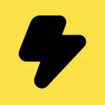
Очень много вакансий со всего мира с удобными фильтрами — в том числе удалёнка с оплатой в валюте
Бесплатный ресурс для компаний, которые ищут удалённых специалистов. Связывает бизнес с фрилансерами и агентствами по всему миру
Площадка для поиска работы в стартапах: 130K+ tech-вакансий от 27K компаний
Крупнейшее сообщество удалённой работы (4.5M+ посетителей). Широкий выбор remote-вакансий в разных сферах
Remote-вакансии в разных индустриях. Известен гибкими форматами работы
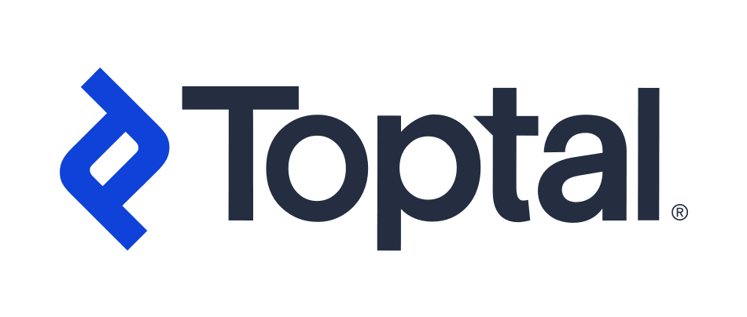
Закрытая сеть для сильных фрилансеров: разработка, дизайн, финансы и другие направления
Remote-вакансии по всему миру или рядом с вами. Есть career coaching и помощь с резюме
Агрегатор remote-вакансий из разных индустрий. Можно фильтровать по категории и зарплате
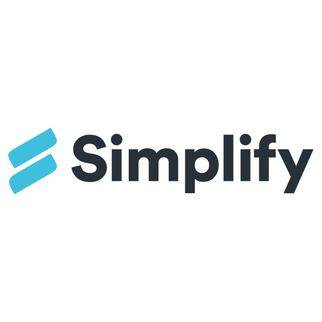
Удобный сервис для поиска работы и откликов: автозаполнение форм, трекинг заявок и рекомендации вакансий
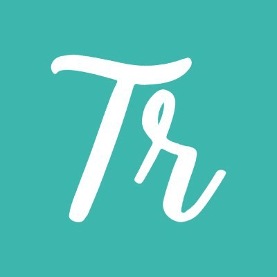
Международные remote-вакансии «work from anywhere»: новые листинги каждый день, предварительный отбор по качеству. Удобные фильтры по роли, индустрии и региону найма
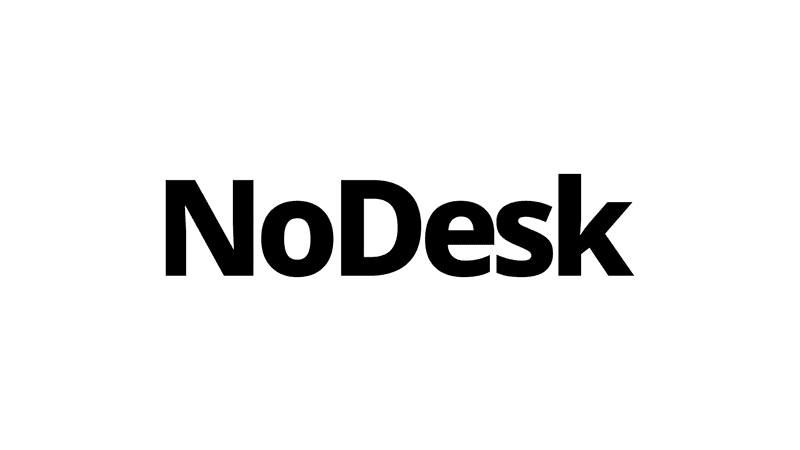
Одна из старейших remote job boards: вакансии у distributed-компаний и стартапов. Можно откликаться без регистрации, обновляется ежедневно
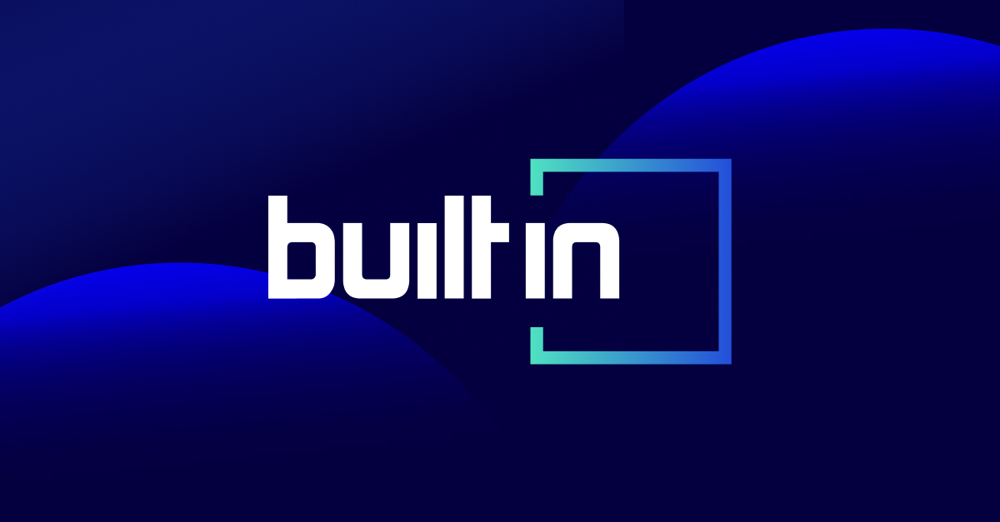
Крупная площадка tech-вакансий (в основном США и Европа): стартапы, scale-up и корпорации. Много engineering, product и data-ролей, в том числе remote
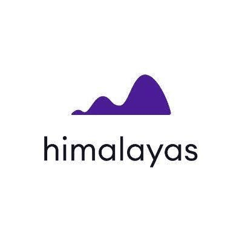
Remote job board с AI-инструментами: 100K+ вакансий, подбор по профилю, трекер откликов, генератор резюме и cover letter, mock-интервью
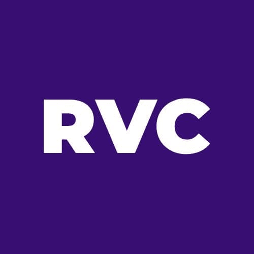
Агрегатор международных вакансий. Прикольный сайт с удобным заполнением резюме, можно выбирать вакансии по странам